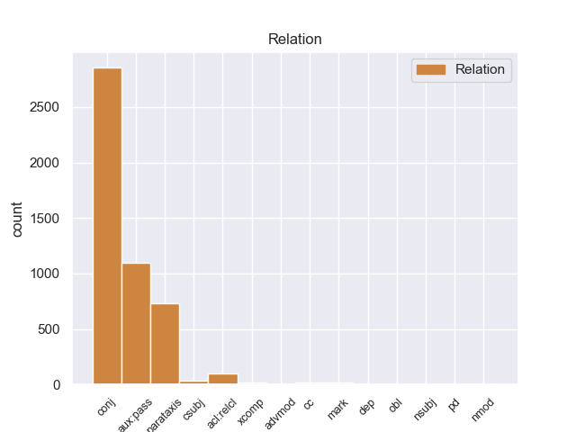
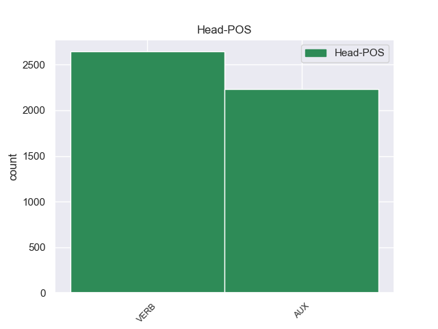
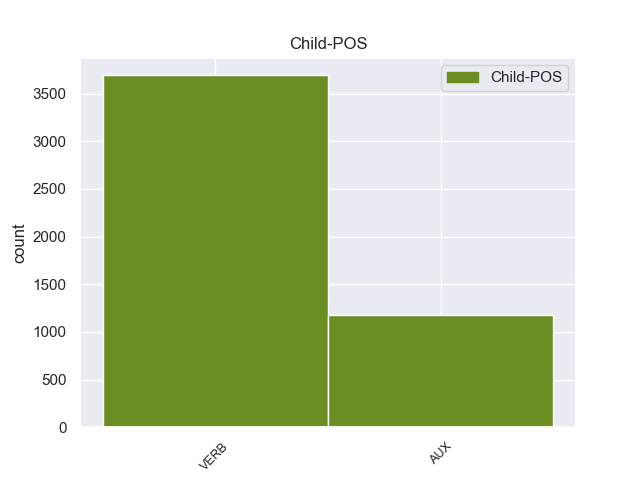

Distribution of features within this leaf



Agreement Rules sorted by frequency.
- When the dependent token is the conjunct(conj) of the head token,
1 Jazmin _ _ _ _ 0 _ _ _
2 es ser AUX -- Mood=Ind|Number=Sing|Person=3|Tense=Pres|VerbForm=Fin 0 _ _ _
3 todo _ _ _ _ 0 _ _ _
4 lo _ _ _ _ 0 _ _ _
5 contrario _ _ _ _ 0 _ _ _
6 , _ _ _ _ 0 _ _ _
7 es _ _ _ _ 0 _ _ _
8 tímida _ _ _ _ 0 _ _ _
9 y _ _ _ _ 0 _ _ _
10 callada _ _ _ _ 0 _ _ _
11 , _ _ _ _ 0 _ _ _
12 pero _ _ _ _ 0 _ _ _
13 siempre _ _ _ _ 0 _ _ _
14 es ser AUX -- Mood=Ind|Number=Sing|Person=3|Tense=Pres|VerbForm=Fin 2 conj _ _
15 arrastrada _ _ _ _ 0 _ _ _
16 por _ _ _ _ 0 _ _ _
17 las _ _ _ _ 0 _ _ _
18 locuras _ _ _ _ 0 _ _ _
19 y _ _ _ _ 0 _ _ _
20 travesuras _ _ _ _ 0 _ _ _
21 que _ _ _ _ 0 _ _ _
22 inventa _ _ _ _ 0 _ _ _
23 Alma _ _ _ _ 0 _ _ _
24 . _ _ _ _ 0 _ _ _
1 En _ _ _ _ 0 _ _ _
2 estos _ _ _ _ 0 _ _ _
3 trabajos _ _ _ _ 0 _ _ _
4 se _ _ _ _ 0 _ _ _
5 pusieron _ _ _ _ 0 _ _ _
6 a _ _ _ _ 0 _ _ _
7 el _ _ _ _ 0 _ _ _
8 descubierto _ _ _ _ 0 _ _ _
9 25 _ _ _ _ 0 _ _ _
10 vanos _ _ _ _ 0 _ _ _
11 correspondientes _ _ _ _ 0 _ _ _
12 a _ _ _ _ 0 _ _ _
13 ventanas _ _ _ _ 0 _ _ _
14 saeteras _ _ _ _ 0 _ _ _
15 que _ _ _ _ 0 _ _ _
16 habían _ _ _ _ 0 _ _ _
17 sido ser AUX -- Gender=Masc|Number=Sing|Tense=Past|VerbForm=Part 0 _ _ _
18 tapiadas tapiado VERB -- Gender=Fem|Number=Plur|Tense=Past|VerbForm=Part 17 AUX:PASS _ _
19 en _ _ _ _ 0 _ _ _
20 los _ _ _ _ 0 _ _ _
21 siglos _ _ _ _ 0 _ _ _
22 anteriores _ _ _ _ 0 _ _ _
23 . _ _ _ _ 0 _ _ _
1 Jazmin _ _ _ _ 0 _ _ _
2 es ser AUX -- Mood=Ind|Number=Sing|Person=3|Tense=Pres|VerbForm=Fin 0 _ _ _
3 todo _ _ _ _ 0 _ _ _
4 lo _ _ _ _ 0 _ _ _
5 contrario _ _ _ _ 0 _ _ _
6 , _ _ _ _ 0 _ _ _
7 es ser AUX -- Mood=Ind|Number=Sing|Person=3|Tense=Pres|VerbForm=Fin 2 parataxis _ _
8 tímida _ _ _ _ 0 _ _ _
9 y _ _ _ _ 0 _ _ _
10 callada _ _ _ _ 0 _ _ _
11 , _ _ _ _ 0 _ _ _
12 pero _ _ _ _ 0 _ _ _
13 siempre _ _ _ _ 0 _ _ _
14 es _ _ _ _ 0 _ _ _
15 arrastrada _ _ _ _ 0 _ _ _
16 por _ _ _ _ 0 _ _ _
17 las _ _ _ _ 0 _ _ _
18 locuras _ _ _ _ 0 _ _ _
19 y _ _ _ _ 0 _ _ _
20 travesuras _ _ _ _ 0 _ _ _
21 que _ _ _ _ 0 _ _ _
22 inventa _ _ _ _ 0 _ _ _
23 Alma _ _ _ _ 0 _ _ _
24 . _ _ _ _ 0 _ _ _
1 Suele _ _ _ _ 0 _ _ _
2 diferenciar _ _ _ _ 0 _ _ _
3 se _ _ _ _ 0 _ _ _
4 dos _ _ _ _ 0 _ _ _
5 tipos _ _ _ _ 0 _ _ _
6 de _ _ _ _ 0 _ _ _
7 organismo _ _ _ _ 0 _ _ _
8 vegetal _ _ _ _ 0 _ _ _
9 parásito _ _ _ _ 0 _ _ _
10 atendiendo _ _ _ _ 0 _ _ _
11 a _ _ _ _ 0 _ _ _
12 la _ _ _ _ 0 _ _ _
13 presencia _ _ _ _ 0 _ _ _
14 o _ _ _ _ 0 _ _ _
15 no _ _ _ _ 0 _ _ _
16 de _ _ _ _ 0 _ _ _
17 clorofila _ _ _ _ 0 _ _ _
18 , _ _ _ _ 0 _ _ _
19 las _ _ _ _ 0 _ _ _
20 plantas _ _ _ _ 0 _ _ _
21 holoparásitas _ _ _ _ 0 _ _ _
22 son ser AUX -- Mood=Ind|Number=Plur|Person=3|Tense=Pres|VerbForm=Fin 0 _ _ _
23 aquella _ _ _ _ 0 _ _ _
24 cuya _ _ _ _ 0 _ _ _
25 alimentación _ _ _ _ 0 _ _ _
26 depende depender VERB -- Mood=Ind|Number=Sing|Person=3|Tense=Pres|VerbForm=Fin 22 acl:relcl _ _
27 totalmente _ _ _ _ 0 _ _ _
28 de _ _ _ _ 0 _ _ _
29 su _ _ _ _ 0 _ _ _
30 hospedador _ _ _ _ 0 _ _ _
31 a _ _ _ _ 0 _ _ _
32 el _ _ _ _ 0 _ _ _
33 ser _ _ _ _ 0 _ _ _
34 incapaz _ _ _ _ 0 _ _ _
35 de _ _ _ _ 0 _ _ _
36 realizar _ _ _ _ 0 _ _ _
37 actividad _ _ _ _ 0 _ _ _
38 fotosintética _ _ _ _ 0 _ _ _
39 , _ _ _ _ 0 _ _ _
40 las _ _ _ _ 0 _ _ _
41 hemiparásitas _ _ _ _ 0 _ _ _
42 poseen _ _ _ _ 0 _ _ _
43 una _ _ _ _ 0 _ _ _
44 cierta _ _ _ _ 0 _ _ _
45 independencia _ _ _ _ 0 _ _ _
46 de _ _ _ _ 0 _ _ _
47 el _ _ _ _ 0 _ _ _
48 hospedador _ _ _ _ 0 _ _ _
49 aunque _ _ _ _ 0 _ _ _
50 por _ _ _ _ 0 _ _ _
51 los _ _ _ _ 0 _ _ _
52 general _ _ _ _ 0 _ _ _
53 no _ _ _ _ 0 _ _ _
54 pueden _ _ _ _ 0 _ _ _
55 sobrevivir _ _ _ _ 0 _ _ _
56 sin _ _ _ _ 0 _ _ _
57 él _ _ _ _ 0 _ _ _
58 . _ _ _ _ 0 _ _ _
1 Así _ _ _ _ 0 _ _ _
2 , _ _ _ _ 0 _ _ _
3 entiende _ _ _ _ 0 _ _ _
4 que _ _ _ _ 0 _ _ _
5 el _ _ _ _ 0 _ _ _
6 que _ _ _ _ 0 _ _ _
7 alguien _ _ _ _ 0 _ _ _
8 haga hacer VERB -- Mood=Sub|Number=Sing|Person=3|Tense=Pres|VerbForm=Fin 21 csubj _ _
9 un _ _ _ _ 0 _ _ _
10 resultado _ _ _ _ 0 _ _ _
11 extraordinario _ _ _ _ 0 _ _ _
12 -- _ _ _ _ 0 _ _ _
13 como _ _ _ _ 0 _ _ _
14 ganar _ _ _ _ 0 _ _ _
15 ocho _ _ _ _ 0 _ _ _
16 partidas _ _ _ _ 0 _ _ _
17 de _ _ _ _ 0 _ _ _
18 nueve _ _ _ _ 0 _ _ _
19 jugadas _ _ _ _ 0 _ _ _
20 -- _ _ _ _ 0 _ _ _
21 es ser AUX -- Mood=Ind|Number=Sing|Person=3|Tense=Pres|VerbForm=Fin 0 _ _ _
22 mucho _ _ _ _ 0 _ _ _
23 más _ _ _ _ 0 _ _ _
24 improbable _ _ _ _ 0 _ _ _
25 que _ _ _ _ 0 _ _ _
26 ganar _ _ _ _ 0 _ _ _
27 seis _ _ _ _ 0 _ _ _
28 partidas _ _ _ _ 0 _ _ _
29 de _ _ _ _ 0 _ _ _
30 nueve _ _ _ _ 0 _ _ _
31 , _ _ _ _ 0 _ _ _
32 aún _ _ _ _ 0 _ _ _
33 cuando _ _ _ _ 0 _ _ _
34 en _ _ _ _ 0 _ _ _
35 el _ _ _ _ 0 _ _ _
36 primer _ _ _ _ 0 _ _ _
37 caso _ _ _ _ 0 _ _ _
38 los _ _ _ _ 0 _ _ _
39 jugadores _ _ _ _ 0 _ _ _
40 fueran _ _ _ _ 0 _ _ _
41 más _ _ _ _ 0 _ _ _
42 débiles _ _ _ _ 0 _ _ _
43 . _ _ _ _ 0 _ _ _
1 El _ _ _ _ 0 _ _ _
2 entrenador _ _ _ _ 0 _ _ _
3 serbio _ _ _ _ 0 _ _ _
4 confía _ _ _ _ 0 _ _ _
5 en _ _ _ _ 0 _ _ _
6 el _ _ _ _ 0 _ _ _
7 jerezano _ _ _ _ 0 _ _ _
8 , _ _ _ _ 0 _ _ _
9 que _ _ _ _ 0 _ _ _
10 se _ _ _ _ 0 _ _ _
11 convierte _ _ _ _ 0 _ _ _
12 en _ _ _ _ 0 _ _ _
13 parte _ _ _ _ 0 _ _ _
14 fundamental _ _ _ _ 0 _ _ _
15 de _ _ _ _ 0 _ _ _
16 el _ _ _ _ 0 _ _ _
17 equipo _ _ _ _ 0 _ _ _
18 que _ _ _ _ 0 _ _ _
19 consigue _ _ _ _ 0 _ _ _
20 " _ _ _ _ 0 _ _ _
21 El _ _ _ _ 0 _ _ _
22 Doblete _ _ _ _ 0 _ _ _
23 " _ _ _ _ 0 _ _ _
24 , _ _ _ _ 0 _ _ _
25 es ser VERB -- Mood=Ind|Number=Sing|Person=3|Tense=Pres|VerbForm=Fin 29 cc _ _
26 decir _ _ _ _ 0 _ _ _
27 , _ _ _ _ 0 _ _ _
28 que _ _ _ _ 0 _ _ _
29 gana ganar VERB -- Mood=Ind|Number=Sing|Person=3|Tense=Pres|VerbForm=Fin 0 _ _ _
30 la _ _ _ _ 0 _ _ _
31 Liga _ _ _ _ 0 _ _ _
32 y _ _ _ _ 0 _ _ _
33 la _ _ _ _ 0 _ _ _
34 Copa _ _ _ _ 0 _ _ _
35 de _ _ _ _ 0 _ _ _
36 el _ _ _ _ 0 _ _ _
37 Rey _ _ _ _ 0 _ _ _
38 de _ _ _ _ 0 _ _ _
39 Fútbol _ _ _ _ 0 _ _ _
40 en _ _ _ _ 0 _ _ _
41 esa _ _ _ _ 0 _ _ _
42 misma _ _ _ _ 0 _ _ _
43 campaña _ _ _ _ 0 _ _ _
44 . _ _ _ _ 0 _ _ _
1 El _ _ _ _ 0 _ _ _
2 duplicado _ _ _ _ 0 _ _ _
3 luego _ _ _ _ 0 _ _ _
4 logra _ _ _ _ 0 _ _ _
5 transportar _ _ _ _ 0 _ _ _
6 abordo _ _ _ _ 0 _ _ _
7 a _ _ _ _ 0 _ _ _
8 todo _ _ _ _ 0 _ _ _
9 el _ _ _ _ 0 _ _ _
10 SG _ _ _ _ 0 _ _ _
11 - _ _ _ _ 0 _ _ _
12 1 _ _ _ _ 0 _ _ _
13 , _ _ _ _ 0 _ _ _
14 donde _ _ _ _ 0 _ _ _
15 descubren descubrir VERB -- Mood=Ind|Number=Plur|Person=3|Tense=Pres|VerbForm=Fin 22 MARK _ _
16 que _ _ _ _ 0 _ _ _
17 el _ _ _ _ 0 _ _ _
18 Asgard _ _ _ _ 0 _ _ _
19 capturado _ _ _ _ 0 _ _ _
20 , _ _ _ _ 0 _ _ _
21 se _ _ _ _ 0 _ _ _
22 llama llamar VERB -- Mood=Ind|Number=Sing|Person=3|Tense=Pres|VerbForm=Fin 0 _ _ _
23 Loki _ _ _ _ 0 _ _ _
24 y _ _ _ _ 0 _ _ _
25 fue _ _ _ _ 0 _ _ _
26 un _ _ _ _ 0 _ _ _
27 científico _ _ _ _ 0 _ _ _
28 miembro _ _ _ _ 0 _ _ _
29 de _ _ _ _ 0 _ _ _
30 el _ _ _ _ 0 _ _ _
31 Alto _ _ _ _ 0 _ _ _
32 Consejo _ _ _ _ 0 _ _ _
33 , _ _ _ _ 0 _ _ _
34 expulsado _ _ _ _ 0 _ _ _
35 por _ _ _ _ 0 _ _ _
36 realizar _ _ _ _ 0 _ _ _
37 experimentos _ _ _ _ 0 _ _ _
38 ilegales _ _ _ _ 0 _ _ _
39 con _ _ _ _ 0 _ _ _
40 seres _ _ _ _ 0 _ _ _
41 humanos _ _ _ _ 0 _ _ _
42 , _ _ _ _ 0 _ _ _
43 en _ _ _ _ 0 _ _ _
44 un _ _ _ _ 0 _ _ _
45 intento _ _ _ _ 0 _ _ _
46 por _ _ _ _ 0 _ _ _
47 arreglar _ _ _ _ 0 _ _ _
48 la _ _ _ _ 0 _ _ _
49 degeneración _ _ _ _ 0 _ _ _
50 celular _ _ _ _ 0 _ _ _
51 que _ _ _ _ 0 _ _ _
52 afecta _ _ _ _ 0 _ _ _
53 a _ _ _ _ 0 _ _ _
54 los _ _ _ _ 0 _ _ _
55 Asgard _ _ _ _ 0 _ _ _
56 producto _ _ _ _ 0 _ _ _
57 de _ _ _ _ 0 _ _ _
58 su _ _ _ _ 0 _ _ _
59 clonación _ _ _ _ 0 _ _ _
60 excesiva _ _ _ _ 0 _ _ _
61 . _ _ _ _ 0 _ _ _
1 Sam _ _ _ _ 0 _ _ _
2 les _ _ _ _ 0 _ _ _
3 dice _ _ _ _ 0 _ _ _
4 , _ _ _ _ 0 _ _ _
5 de _ _ _ _ 0 _ _ _
6 broma _ _ _ _ 0 _ _ _
7 , _ _ _ _ 0 _ _ _
8 que _ _ _ _ 0 _ _ _
9 Carly _ _ _ _ 0 _ _ _
10 y _ _ _ _ 0 _ _ _
11 Freddie _ _ _ _ 0 _ _ _
12 se _ _ _ _ 0 _ _ _
13 aman _ _ _ _ 0 _ _ _
14 , _ _ _ _ 0 _ _ _
15 provocando _ _ _ _ 0 _ _ _
16 que _ _ _ _ 0 _ _ _
17 los _ _ _ _ 0 _ _ _
18 fans _ _ _ _ 0 _ _ _
19 de _ _ _ _ 0 _ _ _
20 iCarly _ _ _ _ 0 _ _ _
21 inicien _ _ _ _ 0 _ _ _
22 una _ _ _ _ 0 _ _ _
23 descontrolada _ _ _ _ 0 _ _ _
24 guerra _ _ _ _ 0 _ _ _
25 de _ _ _ _ 0 _ _ _
26 fans _ _ _ _ 0 _ _ _
27 donde _ _ _ _ 0 _ _ _
28 discuten discutar VERB -- Mood=Ind|Number=Plur|Person=3|Tense=Pres|VerbForm=Fin 0 _ _ _
29 qué _ _ _ _ 0 _ _ _
30 relación _ _ _ _ 0 _ _ _
31 amorosa _ _ _ _ 0 _ _ _
32 existe existir VERB -- Mood=Ind|Number=Sing|Person=3|Tense=Pres|VerbForm=Fin 28 xcomp _ _
33 entre _ _ _ _ 0 _ _ _
34 los _ _ _ _ 0 _ _ _
35 chicos _ _ _ _ 0 _ _ _
36 : _ _ _ _ 0 _ _ _
37 si _ _ _ _ 0 _ _ _
38 Carly _ _ _ _ 0 _ _ _
39 y _ _ _ _ 0 _ _ _
40 Freddie _ _ _ _ 0 _ _ _
41 ( _ _ _ _ 0 _ _ _
42 Creddie _ _ _ _ 0 _ _ _
43 ) _ _ _ _ 0 _ _ _
44 o _ _ _ _ 0 _ _ _
45 Sam _ _ _ _ 0 _ _ _
46 y _ _ _ _ 0 _ _ _
47 Freddie _ _ _ _ 0 _ _ _
48 ( _ _ _ _ 0 _ _ _
49 Seddie _ _ _ _ 0 _ _ _
50 ) _ _ _ _ 0 _ _ _
51 tienen _ _ _ _ 0 _ _ _
52 una _ _ _ _ 0 _ _ _
53 relación _ _ _ _ 0 _ _ _
54 romántica _ _ _ _ 0 _ _ _
55 entre _ _ _ _ 0 _ _ _
56 sí _ _ _ _ 0 _ _ _
57 , _ _ _ _ 0 _ _ _
58 lo _ _ _ _ 0 _ _ _
59 cual _ _ _ _ 0 _ _ _
60 los _ _ _ _ 0 _ _ _
61 sorprende _ _ _ _ 0 _ _ _
62 mucho _ _ _ _ 0 _ _ _
63 y _ _ _ _ 0 _ _ _
64 afecta _ _ _ _ 0 _ _ _
65 las _ _ _ _ 0 _ _ _
66 oportunidades _ _ _ _ 0 _ _ _
67 de _ _ _ _ 0 _ _ _
68 Carly _ _ _ _ 0 _ _ _
69 de _ _ _ _ 0 _ _ _
70 salir _ _ _ _ 0 _ _ _
71 con _ _ _ _ 0 _ _ _
72 Adam _ _ _ _ 0 _ _ _
73 . _ _ _ _ 0 _ _ _
1 Nacido nacido VERB -- Gender=Masc|Number=Sing|Tense=Past|VerbForm=Part 0 _ _ _
2 el _ _ _ _ 0 _ _ _
3 5 _ _ _ _ 0 _ _ _
4 de _ _ _ _ 0 _ _ _
5 enero _ _ _ _ 0 _ _ _
6 de _ _ _ _ 0 _ _ _
7 1893 _ _ _ _ 0 _ _ _
8 , _ _ _ _ 0 _ _ _
9 cuando _ _ _ _ 0 _ _ _
10 contaba _ _ _ _ 0 _ _ _
11 con _ _ _ _ 0 _ _ _
12 8 _ _ _ _ 0 _ _ _
13 años _ _ _ _ 0 _ _ _
14 falleció fallecer VERB -- Mood=Ind|Number=Sing|Person=3|Tense=Past|VerbForm=Fin 1 dep _ _
15 su _ _ _ _ 0 _ _ _
16 padre _ _ _ _ 0 _ _ _
17 , _ _ _ _ 0 _ _ _
18 Ramón _ _ _ _ 0 _ _ _
19 M _ _ _ _ 0 _ _ _
20 ª _ _ _ _ 0 _ _ _
21 Tenreiro _ _ _ _ 0 _ _ _
22 Fernández _ _ _ _ 0 _ _ _
23 , _ _ _ _ 0 _ _ _
24 quedando _ _ _ _ 0 _ _ _
25 bajo _ _ _ _ 0 _ _ _
26 la _ _ _ _ 0 _ _ _
27 tutela _ _ _ _ 0 _ _ _
28 de _ _ _ _ 0 _ _ _
29 su _ _ _ _ 0 _ _ _
30 tío _ _ _ _ 0 _ _ _
31 materno _ _ _ _ 0 _ _ _
32 , _ _ _ _ 0 _ _ _
33 Ricardo _ _ _ _ 0 _ _ _
34 Rodríguez _ _ _ _ 0 _ _ _
35 Pastor _ _ _ _ 0 _ _ _
36 . _ _ _ _ 0 _ _ _
1 Hasta _ _ _ _ 0 _ _ _
2 1835 _ _ _ _ 0 _ _ _
3 , _ _ _ _ 0 _ _ _
4 la _ _ _ _ 0 _ _ _
5 villa _ _ _ _ 0 _ _ _
6 era _ _ _ _ 0 _ _ _
7 conocido _ _ _ _ 0 _ _ _
8 en _ _ _ _ 0 _ _ _
9 inglés _ _ _ _ 0 _ _ _
10 como _ _ _ _ 0 _ _ _
11 Pool _ _ _ _ 0 _ _ _
12 ( _ _ _ _ 0 _ _ _
13 Pantano _ _ _ _ 0 _ _ _
14 en _ _ _ _ 0 _ _ _
15 inglés _ _ _ _ 0 _ _ _
16 viejo _ _ _ _ 0 _ _ _
17 ) _ _ _ _ 0 _ _ _
18 , _ _ _ _ 0 _ _ _
19 pero _ _ _ _ 0 _ _ _
20 fue ser AUX -- Mood=Ind|Number=Sing|Person=3|Tense=Past|VerbForm=Fin 0 _ _ _
21 cambiado _ _ _ _ 0 _ _ _
22 , _ _ _ _ 0 _ _ _
23 debido deber VERB -- Gender=Masc|Number=Sing|Tense=Past|VerbForm=Part 20 obl _ _
24 a _ _ _ _ 0 _ _ _
25 la _ _ _ _ 0 _ _ _
26 villa _ _ _ _ 0 _ _ _
27 inglesa _ _ _ _ 0 _ _ _
28 de _ _ _ _ 0 _ _ _
29 Poole _ _ _ _ 0 _ _ _
30 en _ _ _ _ 0 _ _ _
31 el _ _ _ _ 0 _ _ _
32 condado _ _ _ _ 0 _ _ _
33 de _ _ _ _ 0 _ _ _
34 Dorset _ _ _ _ 0 _ _ _
35 . _ _ _ _ 0 _ _ _
1 Es ser AUX -- Mood=Ind|Number=Sing|Person=3|Tense=Pres|VerbForm=Fin 4 advmod _ _
2 así _ _ _ _ 0 _ _ _
3 como _ _ _ _ 0 _ _ _
4 nacen nacer VERB -- Mood=Ind|Number=Plur|Person=3|Tense=Pres|VerbForm=Fin 0 _ _ _
5 partidos _ _ _ _ 0 _ _ _
6 como _ _ _ _ 0 _ _ _
7 PASR _ _ _ _ 0 _ _ _
8 en _ _ _ _ 0 _ _ _
9 el _ _ _ _ 0 _ _ _
10 Estado _ _ _ _ 0 _ _ _
11 Delta _ _ _ _ 0 _ _ _
12 Amacuro _ _ _ _ 0 _ _ _
13 , _ _ _ _ 0 _ _ _
14 FVR _ _ _ _ 0 _ _ _
15 en _ _ _ _ 0 _ _ _
16 el _ _ _ _ 0 _ _ _
17 Estado _ _ _ _ 0 _ _ _
18 Miranda _ _ _ _ 0 _ _ _
19 , _ _ _ _ 0 _ _ _
20 FUVE _ _ _ _ 0 _ _ _
21 en _ _ _ _ 0 _ _ _
22 el _ _ _ _ 0 _ _ _
23 Estado _ _ _ _ 0 _ _ _
24 Anzoátegui _ _ _ _ 0 _ _ _
25 , _ _ _ _ 0 _ _ _
26 CRV _ _ _ _ 0 _ _ _
27 en _ _ _ _ 0 _ _ _
28 Caracas _ _ _ _ 0 _ _ _
29 y _ _ _ _ 0 _ _ _
30 otros _ _ _ _ 0 _ _ _
31 , _ _ _ _ 0 _ _ _
32 en _ _ _ _ 0 _ _ _
33 enero _ _ _ _ 0 _ _ _
34 de _ _ _ _ 0 _ _ _
35 el _ _ _ _ 0 _ _ _
36 2006 _ _ _ _ 0 _ _ _
37 , _ _ _ _ 0 _ _ _
38 deciden _ _ _ _ 0 _ _ _
39 agrupar _ _ _ _ 0 _ _ _
40 todos _ _ _ _ 0 _ _ _
41 esos _ _ _ _ 0 _ _ _
42 partidos _ _ _ _ 0 _ _ _
43 regionales _ _ _ _ 0 _ _ _
44 para _ _ _ _ 0 _ _ _
45 la _ _ _ _ 0 _ _ _
46 creación _ _ _ _ 0 _ _ _
47 de _ _ _ _ 0 _ _ _
48 el _ _ _ _ 0 _ _ _
49 Partido _ _ _ _ 0 _ _ _
50 Nacional _ _ _ _ 0 _ _ _
51 y _ _ _ _ 0 _ _ _
52 solicitan _ _ _ _ 0 _ _ _
53 a _ _ _ _ 0 _ _ _
54 el _ _ _ _ 0 _ _ _
55 Poder _ _ _ _ 0 _ _ _
56 Electoral _ _ _ _ 0 _ _ _
57 Venezolano _ _ _ _ 0 _ _ _
58 ( _ _ _ _ 0 _ _ _
59 CNE _ _ _ _ 0 _ _ _
60 ) _ _ _ _ 0 _ _ _
61 la _ _ _ _ 0 _ _ _
62 autorización _ _ _ _ 0 _ _ _
63 para _ _ _ _ 0 _ _ _
64 utilizar _ _ _ _ 0 _ _ _
65 el _ _ _ _ 0 _ _ _
66 nombre _ _ _ _ 0 _ _ _
67 de _ _ _ _ 0 _ _ _
68 Partido _ _ _ _ 0 _ _ _
69 Socialista _ _ _ _ 0 _ _ _
70 de _ _ _ _ 0 _ _ _
71 los _ _ _ _ 0 _ _ _
72 Trabajadores _ _ _ _ 0 _ _ _
73 con _ _ _ _ 0 _ _ _
74 las _ _ _ _ 0 _ _ _
75 siglas _ _ _ _ 0 _ _ _
76 PASO _ _ _ _ 0 _ _ _
77 , _ _ _ _ 0 _ _ _
78 esta _ _ _ _ 0 _ _ _
79 autoridad _ _ _ _ 0 _ _ _
80 electoral _ _ _ _ 0 _ _ _
81 les _ _ _ _ 0 _ _ _
82 negó _ _ _ _ 0 _ _ _
83 el _ _ _ _ 0 _ _ _
84 nombre _ _ _ _ 0 _ _ _
85 y _ _ _ _ 0 _ _ _
86 entonces _ _ _ _ 0 _ _ _
87 decidieron _ _ _ _ 0 _ _ _
88 asumir _ _ _ _ 0 _ _ _
89 la _ _ _ _ 0 _ _ _
90 denominación _ _ _ _ 0 _ _ _
91 de _ _ _ _ 0 _ _ _
92 Izquierda _ _ _ _ 0 _ _ _
93 Unida _ _ _ _ 0 _ _ _
94 . _ _ _ _ 0 _ _ _
1 Entonces _ _ _ _ 0 _ _ _
2 los _ _ _ _ 0 _ _ _
3 líderes _ _ _ _ 0 _ _ _
4 gibelinos _ _ _ _ 0 _ _ _
5 se _ _ _ _ 0 _ _ _
6 reunieron _ _ _ _ 0 _ _ _
7 en _ _ _ _ 0 _ _ _
8 Empoli _ _ _ _ 0 _ _ _
9 y _ _ _ _ 0 _ _ _
10 se _ _ _ _ 0 _ _ _
11 decidió _ _ _ _ 0 _ _ _
12 arrasar _ _ _ _ 0 _ _ _
13 Florencia _ _ _ _ 0 _ _ _
14 : _ _ _ _ 0 _ _ _
15 fue ser AUX -- Mood=Ind|Number=Sing|Person=3|Tense=Past|VerbForm=Fin 0 _ _ _
16 Farinata farinata VERB -- Gender=Fem|Number=Sing|Tense=Past|VerbForm=Part 15 nsubj _ _
17 quien _ _ _ _ 0 _ _ _
18 bochó _ _ _ _ 0 _ _ _
19 la _ _ _ _ 0 _ _ _
20 iniciativa _ _ _ _ 0 _ _ _
21 , _ _ _ _ 0 _ _ _
22 y _ _ _ _ 0 _ _ _
23 así _ _ _ _ 0 _ _ _
24 volvió _ _ _ _ 0 _ _ _
25 triunfante _ _ _ _ 0 _ _ _
26 a _ _ _ _ 0 _ _ _
27 la _ _ _ _ 0 _ _ _
28 ciudad _ _ _ _ 0 _ _ _
29 , _ _ _ _ 0 _ _ _
30 donde _ _ _ _ 0 _ _ _
31 murió _ _ _ _ 0 _ _ _
32 en _ _ _ _ 0 _ _ _
33 1264 _ _ _ _ 0 _ _ _
34 . _ _ _ _ 0 _ _ _
1 En _ _ _ _ 0 _ _ _
2 otros _ _ _ _ 0 _ _ _
3 lugares _ _ _ _ 0 _ _ _
4 el _ _ _ _ 0 _ _ _
5 animismo _ _ _ _ 0 _ _ _
6 es ser AUX -- Mood=Ind|Number=Sing|Person=3|Tense=Pres|VerbForm=Fin 0 _ _ _
7 en _ _ _ _ 0 _ _ _
8 cambio _ _ _ _ 0 _ _ _
9 la _ _ _ _ 0 _ _ _
10 creencia _ _ _ _ 0 _ _ _
11 en _ _ _ _ 0 _ _ _
12 que _ _ _ _ 0 _ _ _
13 los _ _ _ _ 0 _ _ _
14 objetos _ _ _ _ 0 _ _ _
15 ( _ _ _ _ 0 _ _ _
16 como _ _ _ _ 0 _ _ _
17 animales _ _ _ _ 0 _ _ _
18 , _ _ _ _ 0 _ _ _
19 herramientas _ _ _ _ 0 _ _ _
20 y _ _ _ _ 0 _ _ _
21 fenómenos _ _ _ _ 0 _ _ _
22 naturales _ _ _ _ 0 _ _ _
23 ) _ _ _ _ 0 _ _ _
24 son _ _ _ _ 0 _ _ _
25 o _ _ _ _ 0 _ _ _
26 poseen poseer VERB -- Mood=Ind|Number=Plur|Person=3|Tense=Pres|VerbForm=Fin 6 nmod _ _
27 expresiones _ _ _ _ 0 _ _ _
28 de _ _ _ _ 0 _ _ _
29 vida _ _ _ _ 0 _ _ _
30 inteligente _ _ _ _ 0 _ _ _
31 . _ _ _ _ 0 _ _ _
Disagree Examples:
1 El _ _ _ _ 0 _ _ _
2 Sevilla _ _ _ _ 0 _ _ _
3 cerrará cerrar VERB -- Mood=Ind|Number=Sing|Person=3|Tense=Fut|VerbForm=Fin 0 _ _ _
4 el _ _ _ _ 0 _ _ _
5 fichaje _ _ _ _ 0 _ _ _
6 de _ _ _ _ 0 _ _ _
7 un _ _ _ _ 0 _ _ _
8 central _ _ _ _ 0 _ _ _
9 en _ _ _ _ 0 _ _ _
10 los _ _ _ _ 0 _ _ _
11 próximos _ _ _ _ 0 _ _ _
12 días _ _ _ _ 0 _ _ _
13 y _ _ _ _ 0 _ _ _
14 se _ _ _ _ 0 _ _ _
15 trata tratar VERB -- Mood=Ind|Number=Sing|Person=3|Tense=Pres|VerbForm=Fin 3 conj _ _
16 de _ _ _ _ 0 _ _ _
17 un _ _ _ _ 0 _ _ _
18 futbolista _ _ _ _ 0 _ _ _
19 que _ _ _ _ 0 _ _ _
20 se _ _ _ _ 0 _ _ _
21 llama _ _ _ _ 0 _ _ _
22 Spahic _ _ _ _ 0 _ _ _
23 y _ _ _ _ 0 _ _ _
24 juega _ _ _ _ 0 _ _ _
25 actualmente _ _ _ _ 0 _ _ _
26 en _ _ _ _ 0 _ _ _
27 el _ _ _ _ 0 _ _ _
28 Montpellier _ _ _ _ 0 _ _ _
29 francés _ _ _ _ 0 _ _ _
30 donde _ _ _ _ 0 _ _ _
31 disputa _ _ _ _ 0 _ _ _
32 la _ _ _ _ 0 _ _ _
33 Ligue _ _ _ _ 0 _ _ _
34 1 _ _ _ _ 0 _ _ _
35 desde _ _ _ _ 0 _ _ _
36 hace _ _ _ _ 0 _ _ _
37 varios _ _ _ _ 0 _ _ _
38 años _ _ _ _ 0 _ _ _
39 junto _ _ _ _ 0 _ _ _
40 a _ _ _ _ 0 _ _ _
41 otros _ _ _ _ 0 _ _ _
42 jugadores _ _ _ _ 0 _ _ _
43 . _ _ _ _ 0 _ _ _
1 Aduana _ _ _ _ 0 _ _ _
2 Vieja _ _ _ _ 0 _ _ _
3 se _ _ _ _ 0 _ _ _
4 ha _ _ _ _ 0 _ _ _
5 distinguido distinguir VERB -- Gender=Masc|Number=Sing|Tense=Past|VerbForm=Part 0 _ _ _
6 por _ _ _ _ 0 _ _ _
7 la _ _ _ _ 0 _ _ _
8 calidad _ _ _ _ 0 _ _ _
9 formal _ _ _ _ 0 _ _ _
10 de _ _ _ _ 0 _ _ _
11 sus _ _ _ _ 0 _ _ _
12 ediciones _ _ _ _ 0 _ _ _
13 y _ _ _ _ 0 _ _ _
14 para _ _ _ _ 0 _ _ _
15 ello _ _ _ _ 0 _ _ _
16 ha haber AUX -- Mood=Ind|Number=Sing|Person=3|Tense=Pres|VerbForm=Fin 5 conj _ _
17 contado _ _ _ _ 0 _ _ _
18 desde _ _ _ _ 0 _ _ _
19 sus _ _ _ _ 0 _ _ _
20 inicios _ _ _ _ 0 _ _ _
21 con _ _ _ _ 0 _ _ _
22 la _ _ _ _ 0 _ _ _
23 colaboración _ _ _ _ 0 _ _ _
24 de _ _ _ _ 0 _ _ _
25 importantes _ _ _ _ 0 _ _ _
26 maestros _ _ _ _ 0 _ _ _
27 de _ _ _ _ 0 _ _ _
28 la _ _ _ _ 0 _ _ _
29 pintura _ _ _ _ 0 _ _ _
30 cubana _ _ _ _ 0 _ _ _
31 e _ _ _ _ 0 _ _ _
32 ilustradores _ _ _ _ 0 _ _ _
33 entre _ _ _ _ 0 _ _ _
34 los _ _ _ _ 0 _ _ _
35 que _ _ _ _ 0 _ _ _
36 se _ _ _ _ 0 _ _ _
37 encuentran _ _ _ _ 0 _ _ _
38 Baruj _ _ _ _ 0 _ _ _
39 Salinas _ _ _ _ 0 _ _ _
40 , _ _ _ _ 0 _ _ _
41 Ramón _ _ _ _ 0 _ _ _
42 Alejandro _ _ _ _ 0 _ _ _
43 , _ _ _ _ 0 _ _ _
44 Gina _ _ _ _ 0 _ _ _
45 Pellón _ _ _ _ 0 _ _ _
46 , _ _ _ _ 0 _ _ _
47 Pedro _ _ _ _ 0 _ _ _
48 Ramón _ _ _ _ 0 _ _ _
49 López _ _ _ _ 0 _ _ _
50 , _ _ _ _ 0 _ _ _
51 Viredo _ _ _ _ 0 _ _ _
52 Espinosa _ _ _ _ 0 _ _ _
53 , _ _ _ _ 0 _ _ _
54 Raúl _ _ _ _ 0 _ _ _
55 de _ _ _ _ 0 _ _ _
56 Zárate _ _ _ _ 0 _ _ _
57 , _ _ _ _ 0 _ _ _
58 Tony _ _ _ _ 0 _ _ _
59 Évora _ _ _ _ 0 _ _ _
60 , _ _ _ _ 0 _ _ _
61 Nelson _ _ _ _ 0 _ _ _
62 Villalobo _ _ _ _ 0 _ _ _
63 , _ _ _ _ 0 _ _ _
64 Raúl _ _ _ _ 0 _ _ _
65 Villarreal _ _ _ _ 0 _ _ _
66 , _ _ _ _ 0 _ _ _
67 Carmelo _ _ _ _ 0 _ _ _
68 González _ _ _ _ 0 _ _ _
69 y _ _ _ _ 0 _ _ _
70 Alen _ _ _ _ 0 _ _ _
71 Lauzán _ _ _ _ 0 _ _ _
72 , _ _ _ _ 0 _ _ _
73 por _ _ _ _ 0 _ _ _
74 mencionar _ _ _ _ 0 _ _ _
75 algunos _ _ _ _ 0 _ _ _
76 ejemplos _ _ _ _ 0 _ _ _
77 . _ _ _ _ 0 _ _ _
1 En _ _ _ _ 0 _ _ _
2 2006 _ _ _ _ 0 _ _ _
3 , _ _ _ _ 0 _ _ _
4 NCR _ _ _ _ 0 _ _ _
5 compró comprar VERB -- Mood=Ind|Number=Sing|Person=3|Tense=Past|VerbForm=Fin 0 _ _ _
6 IDVelocity _ _ _ _ 0 _ _ _
7 y _ _ _ _ 0 _ _ _
8 la _ _ _ _ 0 _ _ _
9 división _ _ _ _ 0 _ _ _
10 de _ _ _ _ 0 _ _ _
11 cajeros _ _ _ _ 0 _ _ _
12 automáticos _ _ _ _ 0 _ _ _
13 de _ _ _ _ 0 _ _ _
14 Tidel _ _ _ _ 0 _ _ _
15 , _ _ _ _ 0 _ _ _
16 eran ser VERB -- Mood=Ind|Number=Plur|Person=3|Tense=Imp|VerbForm=Fin 5 parataxis _ _
17 equipamientos _ _ _ _ 0 _ _ _
18 de _ _ _ _ 0 _ _ _
19 alta _ _ _ _ 0 _ _ _
20 seguridad _ _ _ _ 0 _ _ _
21 para _ _ _ _ 0 _ _ _
22 el _ _ _ _ 0 _ _ _
23 mercado _ _ _ _ 0 _ _ _
24 a _ _ _ _ 0 _ _ _
25 el _ _ _ _ 0 _ _ _
26 por _ _ _ _ 0 _ _ _
27 menor _ _ _ _ 0 _ _ _
28 . _ _ _ _ 0 _ _ _
1 El _ _ _ _ 0 _ _ _
2 profesor _ _ _ _ 0 _ _ _
3 Estafilocóquez _ _ _ _ 0 _ _ _
4 , _ _ _ _ 0 _ _ _
5 un _ _ _ _ 0 _ _ _
6 científico _ _ _ _ 0 _ _ _
7 que _ _ _ _ 0 _ _ _
8 trabajaba trabajar VERB -- Mood=Ind|Number=Sing|Person=3|Tense=Imp|VerbForm=Fin 0 _ _ _
9 para _ _ _ _ 0 _ _ _
10 la _ _ _ _ 0 _ _ _
11 T.I.A. _ _ _ _ 0 _ _ _
12 y _ _ _ _ 0 _ _ _
13 se _ _ _ _ 0 _ _ _
14 volvió volver VERB -- Mood=Ind|Number=Sing|Person=3|Tense=Past|VerbForm=Fin 8 conj _ _
15 loco _ _ _ _ 0 _ _ _
16 , _ _ _ _ 0 _ _ _
17 se _ _ _ _ 0 _ _ _
18 ha _ _ _ _ 0 _ _ _
19 fugado _ _ _ _ 0 _ _ _
20 de _ _ _ _ 0 _ _ _
21 el _ _ _ _ 0 _ _ _
22 sanatorio _ _ _ _ 0 _ _ _
23 y _ _ _ _ 0 _ _ _
24 ha _ _ _ _ 0 _ _ _
25 robado _ _ _ _ 0 _ _ _
26 en _ _ _ _ 0 _ _ _
27 la _ _ _ _ 0 _ _ _
28 sala _ _ _ _ 0 _ _ _
29 de _ _ _ _ 0 _ _ _
30 los _ _ _ _ 0 _ _ _
31 horrores _ _ _ _ 0 _ _ _
32 de _ _ _ _ 0 _ _ _
33 el _ _ _ _ 0 _ _ _
34 museo _ _ _ _ 0 _ _ _
35 de _ _ _ _ 0 _ _ _
36 cera _ _ _ _ 0 _ _ _
37 . _ _ _ _ 0 _ _ _
1 El _ _ _ _ 0 _ _ _
2 profesor _ _ _ _ 0 _ _ _
3 Estafilocóquez _ _ _ _ 0 _ _ _
4 , _ _ _ _ 0 _ _ _
5 un _ _ _ _ 0 _ _ _
6 científico _ _ _ _ 0 _ _ _
7 que _ _ _ _ 0 _ _ _
8 trabajaba _ _ _ _ 0 _ _ _
9 para _ _ _ _ 0 _ _ _
10 la _ _ _ _ 0 _ _ _
11 T.I.A. _ _ _ _ 0 _ _ _
12 y _ _ _ _ 0 _ _ _
13 se _ _ _ _ 0 _ _ _
14 volvió _ _ _ _ 0 _ _ _
15 loco _ _ _ _ 0 _ _ _
16 , _ _ _ _ 0 _ _ _
17 se _ _ _ _ 0 _ _ _
18 ha _ _ _ _ 0 _ _ _
19 fugado fugar VERB -- Gender=Masc|Number=Sing|Tense=Past|VerbForm=Part 0 _ _ _
20 de _ _ _ _ 0 _ _ _
21 el _ _ _ _ 0 _ _ _
22 sanatorio _ _ _ _ 0 _ _ _
23 y _ _ _ _ 0 _ _ _
24 ha haber AUX -- Mood=Ind|Number=Sing|Person=3|Tense=Pres|VerbForm=Fin 19 conj _ _
25 robado _ _ _ _ 0 _ _ _
26 en _ _ _ _ 0 _ _ _
27 la _ _ _ _ 0 _ _ _
28 sala _ _ _ _ 0 _ _ _
29 de _ _ _ _ 0 _ _ _
30 los _ _ _ _ 0 _ _ _
31 horrores _ _ _ _ 0 _ _ _
32 de _ _ _ _ 0 _ _ _
33 el _ _ _ _ 0 _ _ _
34 museo _ _ _ _ 0 _ _ _
35 de _ _ _ _ 0 _ _ _
36 cera _ _ _ _ 0 _ _ _
37 . _ _ _ _ 0 _ _ _